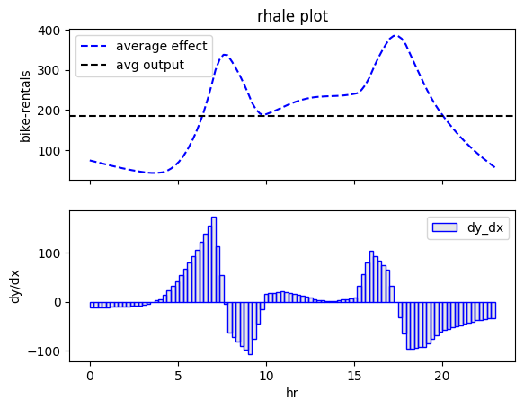
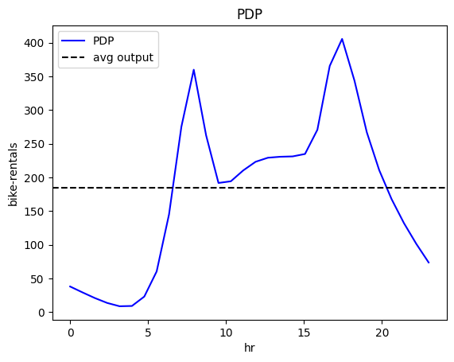
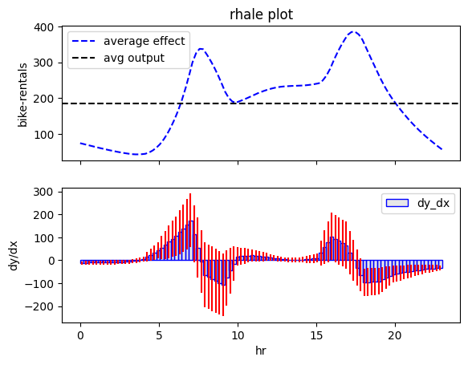
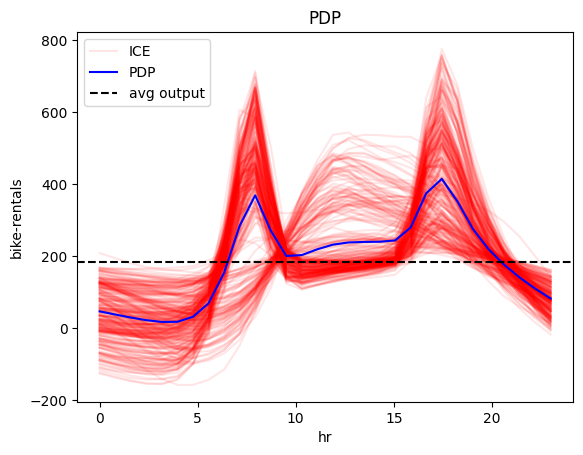

Global Feature Effect
Why do we care about (global) feature effect plots?
Because they are one of the simplest ways to globally interpret a black-box model.
Imagine you have trained a neural network to predict the expected daily bike rentals, like in this tutorial. The model is delivering satisfactory results, exhibiting an average prediction error of approximately \(43\) bike rentals per day.
You want to interpret how the model works. Using feature effect plots, you can immediately get a graphical representation that illustrates how individual features impact the model's predictions:
effector.RHALE(X, model, model_jac).plot(feature=3)

effector.PDP(X, model).plot(feature=3)

Both plots show the effect of feature \(\mathtt{hour}\) on the daily \(\mathtt{bike-rentals}\); there is an abrupt increase in the number of bike rentals at about 8:00 AM (beginning of the workday) and at about 5:00 PM (end of the workday). The following table provides a more detailed interpretation of the plot:
Interpretation: Move along the axis and interpret
| Interval | Description |
|---|---|
| 0-6 | Bike rentals are almost constant and much lower than the average, which is \(\approx 189\) |
| 6-8.30 | Rapid increase; at about 7.00 we are at the average rentals and then even more. |
| 8.30-9.30 | Sudden drop; rentals move back to the average. |
| 9.30-15 | Small increase. |
| 15-17 | High increase; at 17 bike rentals reach the maximum. |
| 17-24 | A constant drop; at 19.00 rentals reach the average and keep decreasing. |
Global feature effect plots provide an immediate interpretation of the model's inner workings, which can raise some criticism and lead to appropriate actions.
Criticism 1: Does this makes sense?
The quick answer is yes. In a typical workday scenario, it's common for people to commute to work between 6:00 AM and 8:30 AM and return home between 3:00 PM and 5:00 PM. However, an expert in city transportation might point out that the model appears to have a slight time shift. They could argue that the actual peak in bike rentals occurs at 8:30 AM, rather than the model's prediction of 7:30 AM.
Action 1: Check if the data confirm criticism 1
We will investigate whether this issue stems from the model or the data. If the claim is not supported by the data, then it may be the case that the recording system provokes the time shift or that the expert is wrong. If the claim is supported by the data, then we should improve the model to increase its accuracy.
Criticism 2: Is the explanation align with all potential scenarios?
Another expert notices that this pattern is meaningful only for the working days. During weekends and holidays, it doesn't logically justify having a peak in rentals as early as 7:30 AM.
Action 2: Check the fidelity of the explanation
To take meaningful action, it is crucial to determine whether this issue originates from the model or the explanation. Is the model treating the feature \(\mathtt{hour}\) uniformly across all days, despite the intuitive understanding that this feature may vary between weekdays and weekends? Is it the opposite- the model has learned to differentiate between these two cases, but it is the explanation that obscures them behind the averaging? Heterogeneity analysis can help us answer these questions.
The heterogeneity is the fidelity of the explanation
Based on Criticism 2, we want to check whether the explanation is valid for all the instances of the dataset.
We can do this by analyzing the heterogeneity, i.e., the deviation of the instance-level effects from the average effect.
In Effector, we can do this by simply setting the confidence_interval parameter an appropriate value:
effector.RHALE(X, model, model_jac).plot(feature=3, heterogeneity=True)

effector.PDP(X, model).plot(feature=3, heterogeneity="ice")

Both methods show that there is high-variance in the instance-level effects; this means that the effect of feature \(\mathtt{hour}\) varies significantly across different instances.
Moreover, PDP-ICE analysis provides precise insights into the distinct patterns:
- There is one cluster, that behaves as described above.
- There is a second cluster that behaves differently, with a rise starting at 9:00 AM, a peak at 12:00 AM and a decline at 6:00 PM.
We have an answer
Great! We have a clear answer on the question raised by Action 2. The issue does not lie with the model itself; instead, it's the global explanation that has concealed the two distinct patterns by averaging them out.
Don't rush to conclusions
There is a small piece of the puzzle missing. Although we have identified the two distinct patterns, we still don't know what causes them. Of course, we can guess that the first pattern is related to the working days, and the second pattern is related to the weekends and holidays. But this is simply our intuition, and we need to confirm it with the data. We need to find the features that are responsible for the two distinct patterns. Regional effect plots are the answer to this question.
Resources for further reading
Below we provide some resources for further reading.
Papers:
Books: